The Easy Animator is a Java text-based animator program that can display a Java Swing animation based on the instruction file.
Originally, this was built solely as a visual based application. Example Below:

We continued adding more functionality to the animator as we continued working on it. More specifically,
we added the ability to take an instruction file, written in this format:
canvas 800 800
rectangle name background min-x 0 min-y 0 width 800 height 800 color 0.1333 0.37 0.976 from 1 to 200
rectangle name B0 min-x 80 min-y 424 width 100 height 326 color 0 0 0 from 1 to 200
rectangle name B1 min-x 260 min-y 365 width 100 height 385 color 0 0 0 from 1 to 200
rectangle name B2 min-x 440 min-y 375 width 100 height 375 color 0 0 0 from 1 to 200
rectangle name B3 min-x 620 min-y 445 width 100 height 305 color 0 0 0 from 1 to 200
...
And the user could specify if they wanted a normal visual, an interactive visual, or to have the file outputted as an svg file,
which is what I am using to create this web page!
If you would like to learn more, go play the github track on the home page to see the code!